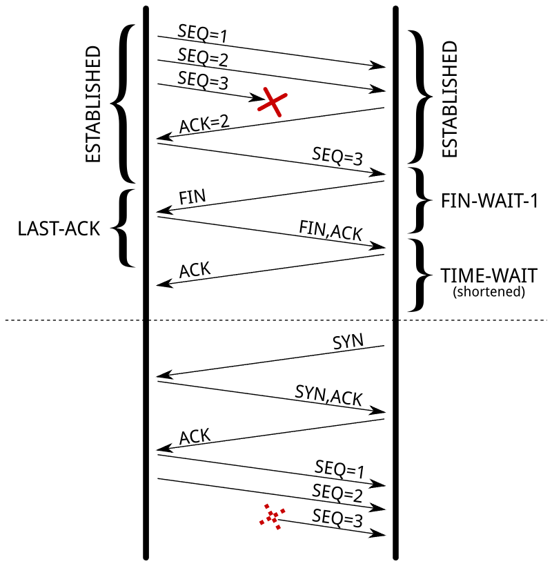
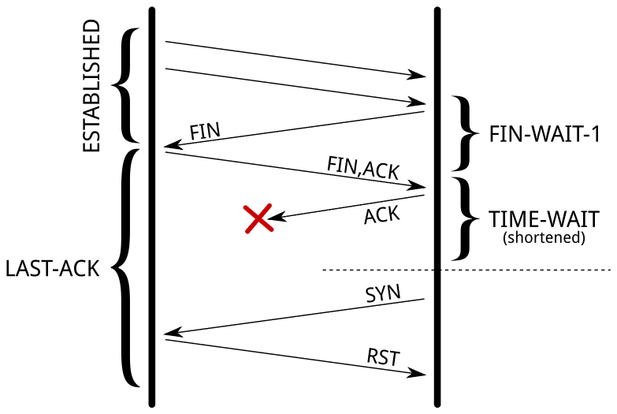

今天来讲一讲 TCP 的 TIME_WAIT 的问题。这个问题尽人皆知，不过，这次遇到的是不太一样的场景，前两天也解决了，正好写篇文章，顺便把 TIME_WAIT 的那些事都说一说。对了，这个场景，跟我开源的探活小工具 EaseProbe 有关，我先说说这个场景里的问题，然后，顺着这个场景跟大家好好说一下这个事。
问题背景
先说一下背景，EaseProbe 是一个轻量独立的用来探活服务健康状况的小工具，支持 http/tcp/shell/ssh/tls/host 以及各种中间件的探活，然后，直接发送通知到主流的 IM 上，如：Slack/Telegram/Discord/Email/Team，包括国内的企业微信/钉钉/飞书，非常好用，用过的人都说好。
这个探活工具在每次探活的时候，必须要从头开始建立整个网络连接，也就是说，需要从头开始进行 DNS 查询，建立 TCP 连接，然后进行通信，再关闭连接。这里，我们不会设置 TCP 的 KeepAlive 来重用连接，因为探活工具除了要探活远端的服务，还要探活整个网络的情况，所以，每次探活都需要重新来过，这样才能捕捉得到整个链路的情况。
但是，这样不断地新建连接和关闭连接，根据 TCP 的状态机，我们知道这会导致在探测端这边出现 TIME_WAIT 状态的 TCP 连接。根据 TCP 协议的定义，这个 TIME_WAIT 需要等待 2 倍 MSL 的时间，TCP 连接才会被系统回收。在回收之前，这个连接会占用系统的资源，主要是两个资源：一个是文件描述符，这个还好，可以调整；另一个则是端口号，这个是没法调整的，因为作为发起请求的 client 来说，在对同一个 IP 上理论上你只有 64K 的端口号可用（实际上系统默认只有近 30K，从 32,768 到 60,999，一共 60999+1-32768=28,232，你可以通过 sysctl net.ipv4.ip_local_port_range 查看）。关于客户端临时端口的分配细节，可以看本站的《客户端端口可以重复使用吗？》。如果 TIME_WAIT 过多，会导致 TCP 无法建立连接，还会因为资源消耗太多导致整个程序甚至整个系统异常。
试想，如果我们以 10 秒为周期探测 10K 的结点，按 TIME_WAIT 的超时时间是 120 秒来算，那么在第 60 秒后，我们就已经发起了 10K × 6 = 6 万次连接，这些连接全都还没等到超时；只要其中一部分探测目标集中在同一个 IP 上，等着超时的 TIME_WAIT 我们就有可能把那个 IP 的端口基本用完了，就算还行，系统也有些问题。
注意：我们不仅仅只是 TCP，还有 HTTP 协议，所以，大家不要觉得 TCP 的四元组只要目标地址不一样就好了。一方面，我们探的是域名，需要访问 DNS 服务，所以，DNS 服务一般是一台服务器；还有，因为 HTTPS 一般是探 API，而且会有网关代理 API，所以连接会到同一个网关上。另外就算还可以建出站连接，但是本地程序会因为端口耗尽无法 bind 了。所以，现实情况并不会像理论情况那样只要四元组不冲突，端口就不会耗尽。
为什么要 TIME_WAIT
那么，为什么 TCP 在 TIME_WAIT 上要等待一个 2MSL 的时间？
以前写过篇比较宏观的《TCP 的那些事》（上篇、下篇），这个问题在「上篇」里讲过；后来还专门写过一篇《为什么需要 TIME_WAIT》，这里再说一次。TCP 断连接的时候，会有下面这个来来回回的过程。
我们来看主动断连接的最后一个状态 TIME_WAIT，它就不需要等待对端回 ack 了，而是进入了超时状态。这主要是因为，在网络上，如果要知道我们发出的数据被对方收到了，那我们就需要对方发来一个确认的 Ack 信息。那问题来了，对方怎么知道自己发出去的 ack，被收到了？难道还要再 ack 一下？这样 ack 来 ack 回的，那谁也不要玩了……
是的，这就是比较著名的【两将军问题】——两个将军需要在一个不稳定的信道上达成对敌攻击时间的协商。A 向 B 派出信鸽：「我们明早 8 点进攻」，A 怎么知道 B 收到了信？那需要 B 向 A 派出信鸽，ack 说「我收到了，明早 8 点开干」。但是，B 怎么知道 A 会收到自己的确认信？是不是还要 A 再确认一下？这样无穷无尽的确认导致这个问题是没有完美解的（我们在《分布式事务》一文中说过这个问题，这里不再重述）。
所以，我们只能等一个我们认为最大的时长来解决两个问题：
1）为了防止来自一个连接的延迟段被依赖于相同四元组（源地址、源端口、目标地址、目标端口）的稍后连接接受（被接受后，就会被马上断掉，TCP 状态机紊乱）。虽然，可以通过指定 TCP 的 sequence number 在一定范围内才能被接受，但这也只是让问题发生的概率低了一些，对于一个吞吐量大的应用来说，依然能够出现问题，尤其是在具有大接收窗口的快速连接上。RFC 1337 详细解释了当 TIME_WAIT 状态不足时会发生什么，下面就是一个如果不缩短状态可以避免的示例：

由于缩短了 TIME_WAIT 状态，后续的 TCP 段已在别的连接中被接受。
2）另一个目的是确保远端已经关闭了连接。当最后一个 ACK 丢失时，对端保持该 LAST_ACK 状态。在没有 TIME_WAIT 状态的情况下，可以重新打开连接，而远程端仍然认为先前的连接有效。当它收到一个 SYN 段（并且序列号匹配）时，它将以 RST 应答，因为它不期望这样的段。新连接将因错误而中止：

如果远端因为最后一个 ACK 丢失而停留在 LAST_ACK 状态，则打开具有相同四元组的新连接将不起作用。
TIME_WAIT 的这个超时时间，在 Linux 内核里由 TCP_TIMEWAIT_LEN 定义，大约是 60 秒。
解决方案
要解决这个问题，网上一般会有不少解法，但对于服务器来说，这些常规解法都不能解决服务器的 TIME_WAIT 过多的问题，真正解决问题的就是——不作死就不会死，也就是说，服务器不要主动断连接，而设置上 KeepAlive 后，让客户端主动断连接，这样服务端只会有 CLOSE_WAIT（服务端出现大量 CLOSE_WAIT 的排查思路可以看《服务端出现大量 CLOSE_WAIT 的排查思路》）。
但是对于用于建立出站连接的探活的 EaseProbe 来说，设置上 tcp_tw_reuse 就可以重用 TIME_WAIT 了，但是这依然无法解决 TIME_WAIT 过多的问题。
然后，过了几天后，我忽然想起来以前在《UNIX 网络编程》上有看到过一个 Socket 的参数，叫 SO_LINGER，我的编程生涯中从来没有使用过这个设置，这个参数主要是为了延时关闭来用的，也就是说你应用调用 close() 函数时，如果还有数据没有发送完成，则需要等一个延时时间来让数据发完，但是，如果你把延时设置为 0 时，Socket 就丢弃数据，并向对方发送一个 RST 来终止连接，因为走的是 RST 包，所以就不会有 TIME_WAIT 了。
这个东西在服务器端永远不要设置，不然，你的客户端就总是看到 TCP 连接错误「connection reset by peer」，但是这个参数对于 EaseProbe 的客户来说，简直是太完美了，当 EaseProbe 探测完后，直接 reset connection，即不会有功能上的问题，也不会影响服务器，更不会有烦人的 TIME_WAIT 问题。
Go 实际操作
在 Golang 的标准库代码里，net.TCPConn 有个方法 SetLinger() 可以完成这个事，使用起来也比较简单：
conn, _ := net.DialTimeout("tcp", t.Host, t.Timeout())
if tcpCon, ok := conn.(*net.TCPConn); ok {
tcpCon.SetLinger(0)
}你需要把一个 net.Conn 转型成 net.TCPConn，然后就可以调用方法了。
但是对于 Golang 的标准库中的 HTTP 对象来说，就有点麻烦了，Golang 的 http 库把底层的这些连接对象全都包装成私有变量了，你在外面根本获取不到。这篇《How to Set Go net/http Socket Options – setsockopt() example》中给出了下面的方法：
dialer := &net.Dialer{
Control: func(network, address string, conn syscall.RawConn) error {
var operr error
if err := conn.Control(func(fd uintptr) {
operr = syscall.SetsockoptInt(int(fd), unix.IPPROTO_TCP, unix.TCP_QUICKACK, 1)
}); err != nil {
return err
}
return operr
},
}
client := &http.Client{
Transport: &http.Transport{
DialContext: dialer.DialContext,
},
}上面这个方法非常的底层，需要直接使用 setsockopt 这样的系统调用（例子里设置的 TCP_QUICKACK 属于 IPPROTO_TCP 层级，同样的 Control 手法也可以用来设置 SO_LINGER），我其实，还是想使用 TCPConn.SetLinger(0) 来完成这个事，既然都被封装好了，最好还是别破坏封装性碰底层的东西。
经过 Golang http 包的源码阅读和摸索，我使用了下面的方法：
client := &http.Client{
Timeout: h.Timeout(),
Transport: &http.Transport{
TLSClientConfig: tls,
DisableKeepAlives: true,
DialContext: func(ctx context.Context, network, addr string) (net.Conn, error) {
d := net.Dialer{Timeout: h.Timeout()}
conn, err := d.DialContext(ctx, network, addr)
if err != nil {
return nil, err
}
tcpConn, ok := conn.(*net.TCPConn)
if ok {
tcpConn.SetLinger(0)
return tcpConn, nil
}
return conn, nil
},
},
}然后，我找来了全球 Top 100W 的域名，然后在 AWS 上开了一台服务器，用脚本生成了 TOP 10K 和 20K 的网站来以 5s, 10s, 30s, 60s 的间隔进行探活，搞到 Cloudflare 的 1.1.1.1 DNS 时不时就把我拉黑，最后的测试结果也非常不错，根本没有 TIME_WAIT 的连接。
总结
下面是几点总结：
- TIME_WAIT 出现在主动关闭连接的一方，需要等待 2MSL（Linux 上大约 60 秒）才会被系统回收，期间会占用端口等资源
- 高频短连接的场景下，TIME_WAIT 堆积可能耗尽本地端口，导致无法建立新连接
- 对服务器来说，最好的办法是不主动断连接，设置 KeepAlive 让客户端主动断
- 对客户端（比如 EaseProbe 这种探活工具），可以用
tcp_tw_reuse重用 TIME_WAIT，也可以像文中这样用SO_LINGER(0)直接发 RST 绕过 TIME_WAIT（这个只能用在自己掌控的客户端上，服务端千万别设，否则对端会一直看到 connection reset by peer）
最后强烈推荐阅读这篇文章 – Coping with the TCP TIME-WAIT state on busy Linux servers。
（全文完）